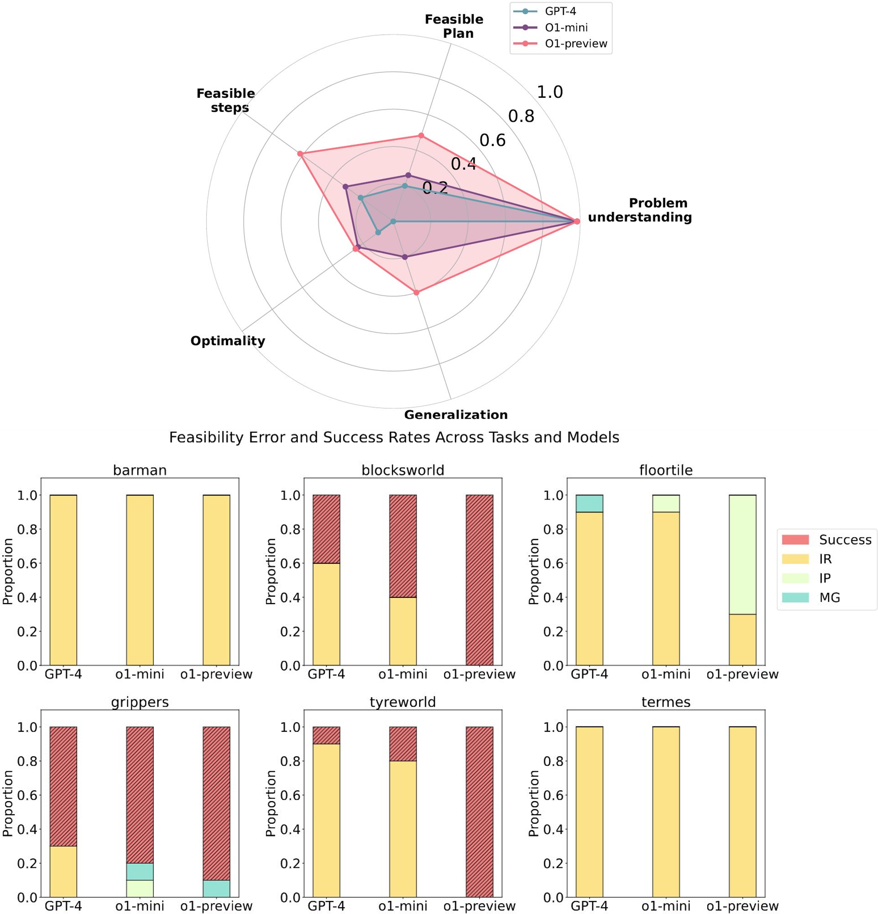

|
I am currently a Research Scientist at the Center for Autonomy working with Professors Atlas Wang and Ufuk Topcu. I am part of the Autonomous Systems Group and the VITA Research Group at the University of Texas at Austin. I am developing neuro-symbolic architectures with research centered at the intersection of generative AI, assured active perception, prediction, and trustworthy sequential decision making for autonomous systems. At UT, I lead two DARPA projects on verification-centric neurosymbolic AI for embodied autonomy. I received my PhD in Mechatronics Engineering from University of Waterloo in 2023. During my PhD, I led efforts on the WATonoBus project at MVS Lab working on software and algorithmic development of perception and prediction modules required for Canada’s first autonomous shuttle bus approved via the ministry’s autonomous vehicle pilot. During this time, I also interned at GM R&D where I worked on deep learning-based state estimation. I have also concurrently been a visiting research scholar since 2021 at the NODE Lab at University of Alberta working on NODE lab's autonomous vehicle. Prior to this, I received my Bachelor's degree in Mechanical Engineering (I was directly admitted to a PhD from Bachelor's) in 2018 with focus on Mechatronics and Robotics from University of Toronto. During this time, I conducted research with Professor Yu Sun on micro and nano robotics and interned at Clearpath Robotics and was awarded NSERC Research Awards for both.
[
|

|
I am open to discussions regarding faculty opportunities starting in 2026.
News
- Nov 2025 Book Chapter on Neurosymbolic AI - Our Neurosymbolic AI: Foundations and Applications book chapter will be published via Wiley in December!
- Nov 2025 Invited Talk @ Neurosymbolic AI Course at UCB - I was invited as a guest lecturer at a Neurosymbolic AI course at UC Boulder!
- Oct 2025 Invited Talk @ Neurosymbolic AI Course at CMU - I was invited as a guest lecturer at a Neurosymbolic AI course at a CMU!
- Oct 2025 Talk @ Lockheed Martin Advanced Technology Lab - I gave a talk at Lockheed Martin ATL - Trusted Intelligent Systems during their annual project PI meeting.
- Oct 2025 Invited Talk @ FM4Control Workshop - I was invited as a workshop field expert/speaker at the FM4Control Workshop at the CMU!
- July 2025 Research Scientist @ Oden Institute - I was appointed as a Research Scientist at the Oden Institute working at the Center for Autonomy at UT Austin!
- June 2025 Talk @ Vanderbilt University for DARPA ANSR - I gave a talk on "NeuroSymbolic LoRA" at the DARPA ANSR PI meeting #4 at Vanderbilt University.
- June 2025 Research Pitch @ Washington DC for AI Expo - I presented a research pitch at the AI Expo in Washington.
- May 2025 Featured Talk @ GrapEx MIT LL - I gave a talk on "In-context automated refinement of LLMs and VLMs" transfer at GraphEx 2025 at the MIT's Endicott House.
- Mar 2025 Talk @ UC Berkeley for DARPA TIAMAT - I gave a talk on "In-context automated refinement of LLMs and VLMs" transfer at the DARPA TIAMAT PI meeting #2 at UC Berkeley.
- Feb 2025 Paper Accepted @ PNAS Nexus - Our position paper on Neuro-symbolic AI as an antithesis to scaling laws was accepted at PNAS Nexus. (Stay tuned for the final version of the paper.)
- Feb 2025 Paper Accepted @ MLSys 2025 - Our work on Know Where You're Uncertain When Planning with Multimodal Foundation Models: A Formal Framework was accepted at MLSys 2025. One of only 61 accepted papers!
- Nov 2024 Talk @ SRI International for DARPA ANSR - I gave a talk on "Neurosymbolic Foundation Model Training at Scale" at the DARPA ANSR PI meeting #3 at SRI International.
- Oct 2024 Paper Accepted @ NeurIPS Workshop 2024 - Our work on On The Planning Abilities of OpenAI's o1 Models: Feasibility, Optimality, and Generalizability was accepted at the Language Gamification workshop @ NeurIPS 2024.
- Sep 2024 Talk @ DARPA TIAMAT/Indianapolis Autonomous Indy - I gave a talk on compositional Sim2Real transfer at the DARPA TIAMAT PI kick-off meeting #1 at Indianapolis motor speedway.
- Jul 2024 Paper Accepted @ T-IV 2024 - Our work on DynaNav-SVO: Dynamic Stereo Visual Odometry With Semantic-Aware Perception for Autonomous Navigation was accepted at T-IV 2024.
- Jun 2024 Paper Accepted @ IROS 2024 - Our work on MM3DGS SLAM: Multi-modal 3D Gaussian Splatting for SLAM Using Vision, Depth, and Inertial Measurements was accepted at IROS 2024. Oral Pitch Finalist!
- May 2024 Talk @ DESTION Workshop and HP AI Labs - I will be giving a talk at DESTION workshop and HP AI Labs on our fine-tuning work.
- May 2024 Serving as Associate Editor @ ITSC 2024 - I will be serving as an associate editor for ITSC 2024 [Video].
- Apr 2024 Talk @ CMU - I gave a talk on assured compositional RL for area and route search missions at the DARPA ANSR PI meeting #2 at CMU.
- Mar 2024 Paper Preprint - Our paper on Comp4D: LLM-Guided Compositional 4D Scene Generation is up!
- Feb 2024 Paper Accepted @ MLSys 2024 - Our work on Fine-tuning Language Models Using Formal Methods Feedback: A Use Case in Autonomous Systems was accepted at: MLSys 2024. One of only 37 accepted papers!
- Jan 2024 Talk @ Oxford - I gave a talk at Oxford on our fine-tuning work.
- Dec 2023 Paper Accepted @ AAAI Workshop 2024 - Our work on Fine-tuning Language Models Using Formal Methods Feedback was accepted at the Neuro-Symbolic Learning and Reasoning in the Era of Large Language Models workshop at AAAI 2024
- Oct 2023 Talk @ UC Berkeley - I gave a talk on my work at the DARPA ANSR PI meeting #1 at UC Berkeley.
- Sep 2023 Organizing Committee - I am part of the organizing committee for ITSC 2024.
- Sep 2023 Started as a Postdoc - I started as a Postdoctoral Fellow at The University of Texas at Austin!
- Aug 2023 Paper Accepted @ ITSC 2023 - Our work A Stereo Visual Odometry Framework with Augmented Perception for Dynamic Urban Environments was accepted to ITSC 2023.
- Jul 2023 Paper Published @ T-IV 2023 - Our work Integrated Inertial-LiDAR-Based Map Matching Localization for Varying Environments was published in T-IV 2023.
- Jun 2023 Featured Video - I was featured on the homepage of Artificial Intelligence Research and Innovation at University of Alberta via a promo video. I also discussed about how I use AI in my research via this U of A video and article.
- Jun 2023 Workshop @ IV 2023 - Co-organizing a workshop on Reliable State Estimation and Distributed Controls in Intelligent Vehicular Networks at IV 2023.
- May 2023 Defended PhD Thesis - My thesis work is out on UW Space.
- May 2023 Paper Published @ T-ITS 2023 - Our work MPC-PF: Socially and Spatially Aware Object Trajectory Prediction for Autonomous Driving Systems Using Potential Fields was accepted to T-ITS 2023.
- Apr 2023 Guest Lecture - Gave a guest lecture on WATonoBus ‑ Algorithms and Software Structure for an All Weather Shuttle for ECE495 at University of Waterloo.
- Oct 2022 Paper Published @ IROS 2022 - I will be presenting our work MPC-PF: Social Interaction Aware Trajectory Prediction of Dynamic Objects for Autonomous Driving Using Potential Fields at IROS 2022 in Kyoto. SOTA on Waymo Motion Prediction Dataset!
- Aug 2022 Paper Published @ CASE 2022 - Our work on Augmented Visual Localization Using a Monocular Camera for Autonomous Mobile Robots was accepted to CASE 2022.
- Aug 2022 Paper Published @ Robotics 2022 - Our work on Infrastructure-Aided Localization and State Estimation for Autonomous Mobile Robots was accepted to Robotics 2022.
- Jun 2021 WATonoBus Project - The autonomous shuttle project I am leading at MVS Lab was given approval as part of the ministry's autonomous vehicle pilot.
- Sep 2020 Paper Published @ ITSC 2020 - I will be presenting our work Real‑time Pedestrian Localization and State Estimation Using Moving Horizon Estimation at ITSC 2020 in Greece.
- Sep 2020 Engineering Excellence Doctoral Fellowship - I was awarded with the EEDF for my PhD work.
- May 2019 Internship - Joined GM at their Global R&D center as an AV Software Engineering Intern working on Deep Learning-based State Estimation.
- May 2018 Completed BASc - I finished my Bachelor's program at University of Toronto and was admitted to a direct PhD program at University of Waterloo.
- May 2017 Internship funded with NSERC Industrial Experience Award - Joined Clearpath Robotics as an R&D Appications Engineering Intern working on ROS projects.
- May 2016 Research Internship funded with NSERC Undergraduate Research Award - Worked with Professor Yu Sun at the Robotics Institute of University of Toronto: Advanced Micro and Nanosystems Lab.
Featured Projects

|
[ Paper / Webpage / Video ] Our team started the WATonoBus autonomous shuttle project in 2018 and has since developed 2 such fully equipped shuttles and is near completion of the third shuttle. The WATonoBus is a platform that contains fully in-house equipped hardware and software stack and has been approved as part of the Ministry of Transportation Ontario’s Autonomous Vehicle Pilot Program currently providing daily free and fully autonomous service to passengers at the University of Waterloo. The University of Waterloo's Ring Road is a 2.7 km curvy road with many intersections and pedestrian crossings that represent an urban driving environment with several pedestrians, cyclists, and vehicles. The WATonoBus project is different from prior project in that it is aimed to operate in all weather conditions including adverse rain, fog, and snow. |
|
[ Webpage / Video ] Since 2021, I have been leading efforts at the NODE lab to develop hardware and software stack on the NODE lab's autonomous Ford Escape vehicle. This platform has been central in working on several research projects covering RL, visual odometry, SLAM, object detection. I also supervise several PhD and Masters students at the lab. |
Selected Publications

|
Neel P. Bhatt, Po-han Li, Kushagra Gupta, Rohan Siva, Daniel Milan, Alexander T. Hogue, Sandeep P. Chinchali, David Fridovich-Keil, Zhangyang Wang, Ufuk Topcu Under Submission. [ Paper / Webpage ] We introduce UNCAP, a planning approach for connected autonomous vehicles that uses natural language communication to convey perception uncertainties. Our two-stage protocol selectively exchanges messages with relevant vehicles, reducing communication bandwidth by 63% while increasing driving safety scores by 31%. |

|
Neel P. Bhatt, Yunhao Yang, Rohan Siva, Pranay Samineni, Daniel Milan, Zhangyang Wang, Ufuk Topcu Under Submission. [ Paper / Webpage ] We present VLN-Zero, a zero-shot vision-language navigation framework that enables robots to follow natural language instructions in unseen environments without task-specific training. Our approach leverages rapid exploration and cache-enabled neurosymbolic planning to achieve effective zero-shot transfer in robot navigation tasks. |

|
Yunhao Yang, Neel P. Bhatt, Pranay Samineni, Rohan Siva, Zhanyang Wang, Ufuk Topcu Under Submission. [ Paper / Webpage ] We introduce RepV, a neurosymbolic verifier that learns a latent space where safe and unsafe plans are linearly separable. Starting with a seed set labeled by a model checker, RepV trains a projector embedding plans and rationales into a low-dimensional space. Our method improves compliance prediction accuracy by up to 15% compared to baselines while adding fewer than 0.2M parameters. |

|
Yunhao Yang, Neel P. Bhatt, William Ward, Zichao Hu, Joydeep Biswas, Ufuk Topcu Under Submission. [ Paper ] We develop a method that converts generated robot programs into automaton-based representations and verifies them against safety specifications. We establish a theorem that any combination of verified programs also satisfies safety specifications, eliminating the need to verify complex composed programs. Our automated fine-tuning procedure increases the probability of generating specification-compliant programs by 30%, with training time reduced by half compared to fine-tuning on full programs. |

|
Neel P. Bhatt*, Yunhao Yang*, Rohan Siva, Daniel Milan, Ufuk Topcu, Atlas Wang Conference on Machine Learning and Systems (MLSys), 2025. One of 61 accepted papers! [ Paper / Webpage / Video / Interactive Demo / Code ] We propose methods tailored to the unique properties of perception and decision-making: we use conformal prediction to calibrate perception uncertainty and introduce FMDP to quantify decision uncertainty, leveraging formal verification techniques for theoretical guarantees. Building on this quantification, we implement two targeted intervention mechanisms: an active sensing process and an automated refinement procedure improving its capability to meet task specifications. Empirical validation in real-world and simulated robotic tasks demonstrates that our uncertainty disentanglement framework reduces variability by up to 40% and enhances task success rates by 5% compared to baselines |
|  |
Kevin Wang*, Junbo Li, Neel P. Bhatt*, Yihan Xi, Qiang Liu, Ufuk Topcu, Atlas Wang Conference on Neural Information Processing Systems (NeurIPS) Language Gamification Workshop, 2025. Our paper reached 65k views on Youtube! [ Paper / Webpage and Code / Video ] We evaluate the planning capabilities of OpenAI's o1 models across a variety of benchmark tasks, focusing on three key aspects: feasibility, optimality, and generalizability. Through empirical evaluations on constraint-heavy tasks (e.g., Barman, Tyreworld) and spatially complex environments (e.g., Termes, Floortile), we highlight o1-preview’s strengths in self-evaluation and constraint-following, while also identifying bottlenecks in decision-making and memory management, particularly in tasks requiring robust spatial reasoning. Our results reveal that o1-preview outperforms GPT-4 in adhering to task constraints and managing state transitions in structured environments. However, the model often generates suboptimal solutions with redundant actions and struggles to generalize effectively in spatially complex tasks. |
|
Neel P. Bhatt*, Yunhao Yang*, Tyler Ingebrand*, William Ward, Steven Carr, Atlas Wang, Ufuk Topcu Conference on Machine Learning and Systems (MLSys), 2024. One of only 37 accepted papers! [ Paper / Poster / Slides / Video ] We present a fully automated approach to fine-tune pre-trained language models for applications in autonomous systems, bridging the gap between generic knowledge and domain-specific requirements while reducing cost. The method synthesizes automaton-based controllers from pre-trained models guided by natural language task descriptions that are formally verified. Controllers with high compliance of the desired specifications receive higher ranks, guiding the iterative fine-tuning process. We provide quantitative evidence demonstrating an improvement in percentage of specifications satisfied from 60% to 90%. |
|

|
Lisong C. Sun*, Neel P. Bhatt*, Jonathan C. Lu, Zhiwen Fan, Atlas Wang, Todd E. Humphreys, Ufuk Topcu International Conference on Intelligent Robots and Systems (IROS), 2024. Oral Pitch Finalist! [ Paper / Poster / Slides / Video / Webpage ] Our method, MM3DGS, addresses the limitations of prior neural radiance field-based representations by enabling faster rendering, scale awareness, and improved trajectory tracking. Our framework enables keyframe-based mapping and tracking utilizing loss functions that incorporate relative pose transformations from pre-integrated inertial measurements, depth estimates, and measures of photometric rendering quality. Experimental evaluation on several scenes shows a 3x improvement in tracking and 5% improvement in photometric rendering quality compared to the current 3DGS SLAM state-of-the-art, while allowing real-time rendering. |

|
Dejia Xu*, Hanwen Liang*, Neel P. Bhatt, Hezhen Hu, Hanxue Liang, Konstantinos N. Plataniotis, Atlas Wang Under submission. [ Paper / Video / Webpage ] Our method, MM3DGS, addresses the limitations of prior neural radiance field-based representations by enabling faster rendering, scale awareness, and improved trajectory tracking. Our framework enables keyframe-based mapping and tracking utilizing loss functions that incorporate relative pose transformations from pre-integrated inertial measurements, depth estimates, and measures of photometric rendering quality. Experimental evaluation on several scenes shows a 3x improvement in tracking and 5% improvement in photometric rendering quality compared to the current 3DGS SLAM state-of-the-art, while allowing real-time rendering. |
|
Marcelo Contreras, Aayush Jain, Neel P. Bhatt, Arunava Banerjee, Ehsan Hashemi Frontiers in Robotics and AI, 2024. [ Paper ] We provide a comprehensive survey and quantitative comparisons with state-of-the-art 3D object detection methodologies aiming to tackle varying weather conditions, multi-modality, multi-camera perspective, and their respective metrics associated to different difficulty categories. We identify several research gaps and potential future directions in visual-based 3D object detection approaches for autonomous driving. |
|

|
Neel P. Bhatt, Amir Khajepour, Ehsan Hashemi Transactions on Intelligent Transportation Systems (T-ITS), 2023. Outperforms 2nd and 3rd place on Waymo Motion Dataset (2021) [ Paper / Video ] We propose MPC-PF, a model that embeds surrounding object and road map information in the form of a potential field to model agent-agent and agent-space interactions. We show the efficacy of our multi-object trajectory prediction method both qualitatively and quantitatively achieving state-of-the-art results on the Waymo Open Motion Dataset and other common urban driving scenarios. |

|
Xin Xia, Neel P. Bhatt, Amir Khajepour, Ehsan Hashemi Transactions on Intelligent Vehicles (T-IV), 2023. [ Paper / Video ] Leveraging a global navigation satellite system, inertial navigation system, and 3D LiDAR point clouds, a novel light point cloud map generation method, which only keeps the necessary point clouds (i.e., buildings and roads regardless of vegetation varying with seasonal change), is proposed. Thorough experiments in winter and summer confirm the advantages of integrating the proposed light point cloud map generation with the dead reckoning model in terms of accuracy and reduced computational complexity. |
|
Marcelo Contreras, Neel P. Bhatt, Ehsan Hashemi Intelligent Transportation Systems Conference (ITSC), 2023. [ Paper / Slides ] We propose a semantic-aware stereo visual odometry framework wherein feature extraction is performed over a static region-of-interest generated through object detection and instance segmentation on static street objects. Extensive real driving sequences in various dynamic urban environments with varying sequence lengths confirms excellent performance and computational efficiency attributed to using semantic-aware feature tracking. |
|

|
Neel P. Bhatt, Amir Khajepour, Ehsan Hashemi International Conference on Intelligent Robots and Systems (IROS), 2022. [ Paper / Video ] Predicting object motion behaviour is a challenging but crucial task for safe decision-making and planning for an autonomous vehicle. We tackle this problem by introducing MPC-PF: a novel potential field-based trajectory predictor that incorporates social interaction and is able to tradeoff between inherent model biases across the prediction horizon. Through evaluation on a variety of common urban driving scenarios, we show that our model produces accurate short and long-term predictions. |
|
Ali Salimzadeh, Neel P. Bhatt, Ehsan Hashemi International Conference on Automation Science and Engineering (CASE), 2022. [ Paper / Slides / Video ] We develop a robust infrastructure-aided localization framework using only a single low-cost camera with a fisheye lens. To reduce the computational load, we use an ROI alongside estimated depth to re-project the robot pointcloud cluster with geometrical outlier detection. We use this position and depth information in an uncertainty-aware observer with adaptive covariance allocation and bounded estimation error to deal with position measurement noises at the limits of the field of view, and intermittent occlusion in dynamic environments. Moreover, we use a learning-based prediction model for input estimation based on a moving buffer of the robot position. Several experiments with occlusion and intermittent visual disruption/detection confirm effectiveness of the developed framework in re-initializing the estimation process after failure in the visual detection, and handling temporary data loss due to sensor faults or changes in lighting conditions. |
|

|
Daniel Flögel, Neel P. Bhatt, Ehsan Hashemi Robotics Journal, 2022. [ Paper ] A slip-aware localization framework is proposed for mobile robots experiencing wheel slip in dynamic environments. The framework fuses infrastructure-aided visual tracking data and proprioceptive sensory data from a skid-steer mobile robot to enhance accuracy and reduce variance of the estimated states. Covariance intersection is used to fuse the pose prediction and the visual thread, such that the updated estimate remains consistent. As confirmed by experiments on a skid-steer mobile robot, the designed localization framework addresses state estimation challenges for indoor/outdoor autonomous mobile robots which experience high-slip, uneven torque distribution at each wheel (by the motion planner), or occlusion when observed by an infrastructure-mounted camera. |

|
Bruno H. Groenner Barbosa, Neel P. Bhatt, Amir Khajepour, Ehsan Hashemi Expert Systems with Applications. [ Paper ] We present a generic feature-based navigation framework for autonomous vehicles using a soft constrained Particle Filter. After obtaining features of mapped landmarks in instance-based segmented images acquired from a monocular camera, vehicle-to-landmark distances are predicted using Gaussian Process Regression (GPR) models in a mixture of experts approach. Experimental results confirm that the use of image segmentation features improves the vehicle-to-landmark distance prediction notably, and that the proposed soft constrained approach reliably localizes the vehicle even with reduced number of landmarks and noisy observations. |

|
Ehsan Mohammadbagher*, Neel P. Bhatt*, Ehsan Hashemi, Baris Fidan, Amir Khajepour Intelligent Transportation Systems Conference (ITSC), 2020. [ Paper / Video ] We propose a constrained moving horizon state estimation approach to estimate an object's states in 3D with respect to a global stationary frame including position, velocity, and acceleration that are robust to intermittently noisy or absent sensor measurements utilizing a computationally light-weight fusion of 2D dections and projected LIDAR depth measurements. The performance of the proposed approach is experimentally verified on our dataset featuring urban pedestrian crossings. |
Outreach

|
[ Webpage ] The Center for Autonomy at the Oden Institute hosted four outreach programs for undergraduates over the summer of 2025. Over the course of three eight-week programs, AEOP, Realtime Adaption REU and NASA's ULI, interns contributed to both software and hardware engineering tasks, supporting ground and legged platforms such as Clearpath Jackals, a Husky, and Unitree Go2 quadrupeds. Under the guidance of research mentor Dr. Christian Ellis and Ph.D. students, participants broke down complex research objectives into achievable tasks, ultimately developing software to work seamlessly with real robotic systems. |

|
[ Webpage ] On February 25, 2025, the Center for Autonomy hosted upperclassmen in robotics and engineering programs at Del Valle High School, where 84.4% of students are economically disadvantaged. The students explored technological innovations at the frontiers of academia and industry, including tours of the Robotics Lab at Anna Hiss Gym and the Texas Advanced Computing Center's (TACC) Visualization Lab (VisLab) at the Oden Institute. Students learned about artificial intelligence for autonomous systems, including rovers, robotic arms, drones, and driverless cars. |

|
[ Webpage ] The Center for Autonomy hosted the Introductory Research Experience in Autonomy and Control Technologies (REACT) Research Experience for Undergraduates (REU) from July 28 to August 10, 2025. REACT is a collaborative effort between the University of Texas at Austin, the University of New Mexico, and Hampton University. The two-week research program is designed for undergraduate students majoring in engineering disciplines such as aerospace, computer, electrical, and mechanical, as well as computer science, mathematics, and statistics. Through the program, students engage in cutting-edge research in world-class laboratories at UT Austin, collaborate with fellow researchers, attend workshops, and tour industry and research facilities. |

|
[ Webpage ] In December of 2023, the Texas Advanced Computing Center (TACC) hosted two engaging cybersecurity events, "GenCyber Back@TACC" and "Level UP GenCyber Back@TACC," both aimed at educating high school students in various aspects of coding and cybersecurity. I contributed by motivating students envision a future in both cybersecurity and the broader selection of STEM fields. I also helped by facilitating the learning process, answering questions, and engaging high school students in discussions about their personal experiences from their academic journeys in STEM, thereby encouraging students to consider future studies and careers. |
|
[ Webpage ] This event, hosted by Center for Autonomy, invited students from the Del Valle Independent School District (Travis County, TX), out of which 84.4% are economically disadvantaged. I presented to the students a high-level overview of what academic research looks like through my research on multi-modal 3D Guassian splatting for simultaneous localization and mapping and its implementation on the Clearpath jackal robots. I used TACC’s high resolution screens to deliver my presentation in an interactive manner. I shared my undergrad, internship, PhD, and postdoc experiences with the students and gave them a personal view of how each one led to the next career step so that they could understand potential career trajectories. I motivated the students to ask questions and answered their questions ranging from how I got into robotics through First Robotics Challenge (FRC) – their school participates in the same competition, what I do not like about industry, and failures through my career journey. |
Media Coverage
Interviews & Spotlights |
|

|
[ Article / Video Feature ] Featured interview highlighting research contributions and innovations in autonomous systems and AI at the University of Alberta. |
WATonoBus / Autonomous Shuttle in the News |
|

|
[ Waterloo News / Demo Video / CityNews / CTV News / CBC News ] Extensive media coverage of Canada's first autonomous 5G shuttle bus project, including features in major news outlets covering the launch, development, and impact of the WATonoBus autonomous transportation system at University of Waterloo. |

|
[ Article ] Technical feature article by Seeed Studio covering the WATonoBus project's AI-powered environmental perception, traffic analysis, and autonomous driving capabilities using NVIDIA Jetson Orin NX edge computing. |
Neurosymbolic AI Research |
|

|
[ Colorado Boulder / UT Austin / EurekAlert ] Media coverage of research on democratizing AI and making it work more like the human brain, featuring neurosymbolic AI approaches and brain-inspired computing. Includes features from University of Colorado Boulder, UT Austin Center for Autonomy, and scientific press releases. |